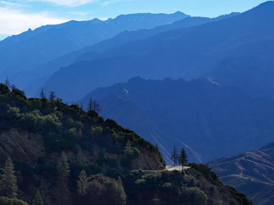
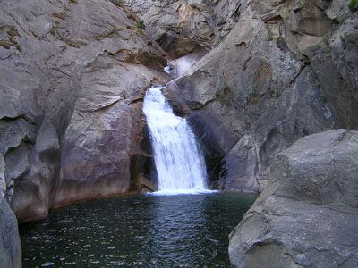
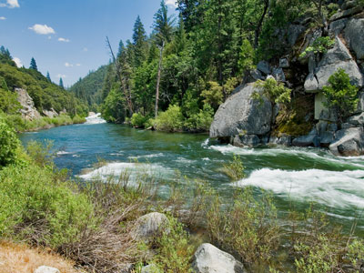
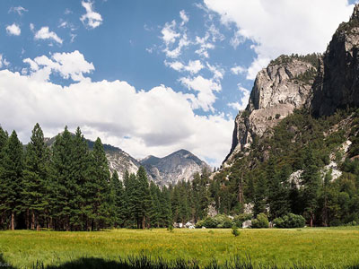
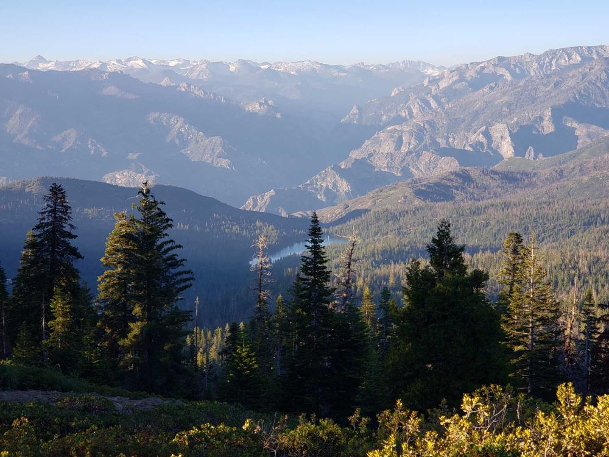
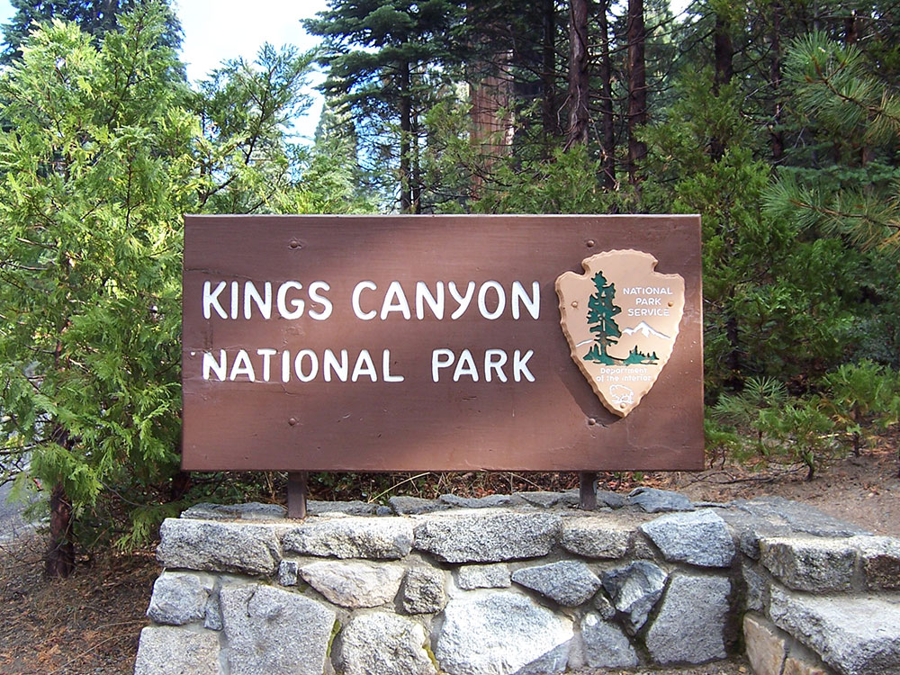
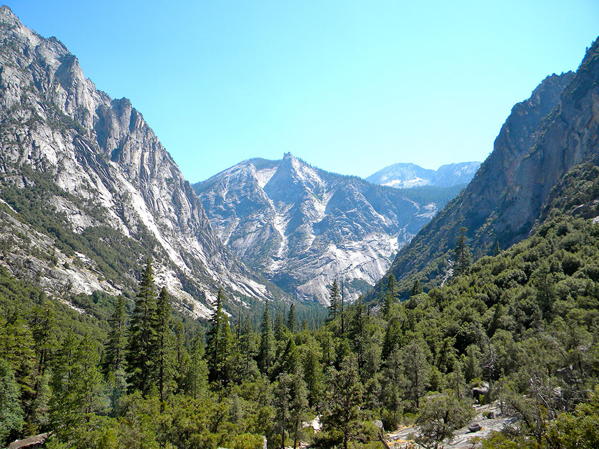
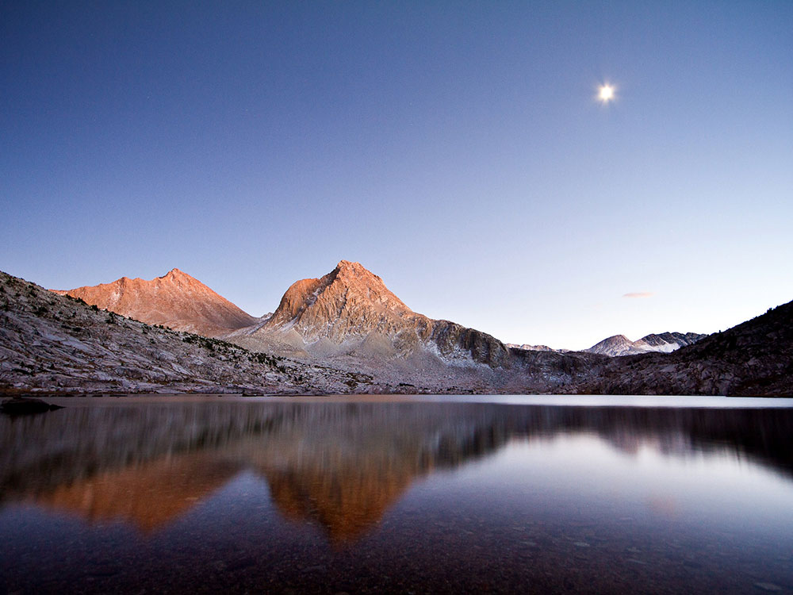

Kings Canyon National Park Travel Guide
Rugged, glacier-carved valley more than a mile deep. Other natural features include multiple 14,000-foot peaks, high mountain meadows, swift-flowing rivers, and some of the world's largest stands of giant sequoia trees
Kings Canyon Visitor Center (Grant Grove): Open year-round; hours vary by season
Cedar Grove Visitor Center: Summer only
This pass is valid for 1-7 days and includes everyone traveling in a single vehicle for Sequoia & Kings Canyon National Parks and Hume Lake District of Sequoia National Forest/Giant Sequoia National Monument.
Accepts America The Beautiful Pass.
Non-U.S. residents age 16 and older pay an additional $100 per person (or may buy the $250 nonresident America the Beautiful Pass).
How to Get There
From Fresno (53 mi): Head southeast on N St toward Tulare St. Turn left onto Tulare St. Use the right 2 lanes to turn slightly right to merge onto CA-41 N. Use the right 2 lanes to take exit 128A to merge onto CA-180 E toward Kings Canyon.
Overview
Kings Canyon National Park protects 461,901 acres of the southern Sierra Nevada, from groves of giant sequoias in the west to a vast, roadless wilderness of granite peaks over 14,000 feet in the east. Its namesake, Kings Canyon, is a glacier-carved valley more than a mile deep along the South Fork of the Kings River, making it one of the deepest canyons in North America. The park is also home to the General Grant Tree, one of the largest trees on Earth and designated the "Nation's Christmas Tree." Kings Canyon borders Sequoia National Park to the south, and the two parks are managed together as Sequoia and Kings Canyon National Parks.
The park began in 1890 as tiny General Grant National Park, created to save the sequoias of Grant Grove from logging. John Muir praised the canyon of the South Fork as a rival to Yosemite, but proposals to dam the canyon for hydroelectric power delayed its protection for decades. In 1940, Congress expanded the park and renamed it Kings Canyon National Park, and Cedar Grove and Tehipite Valley were added in 1965. Kings Canyon is much less crowded than Yosemite or Sequoia. Visitors come to walk among the giant sequoias of Grant Grove, drive the dramatic Kings Canyon Scenic Byway into the canyon, hike along the river, and set out on backpacking trips into some of the wildest high country in the Sierra.
Park Sections
Kings Canyon has three main parts. The Grant Grove area in the park's western section, reached through the Big Stump Entrance on Highway 180 from Fresno, has the General Grant Tree, visitor center, lodging, and services, and is open all year. Nearby, Redwood Mountain Grove is one of the largest remaining giant sequoia groves in the world. From Grant Grove, Highway 180 continues as the Kings Canyon Scenic Byway, which descends about 30 miles through Sequoia National Forest and Giant Sequoia National Monument to Cedar Grove and Roads End at the bottom of the canyon. This drive takes about an hour, and the road is open only from late April or May to mid-November. The rest of the park, more than 90 percent of it, is roadless wilderness reached only on foot or horseback. It includes the John Muir Trail, Rae Lakes, Evolution Basin, and the Sierra crest. The Generals Highway links Grant Grove with Sequoia National Park's Giant Forest, about an hour's drive to the south.
Sightseeing and Scenic Drives
The park's signature drive is the Kings Canyon Scenic Byway (Highway 180), which winds down from Grant Grove into one of the deepest canyons in the country. Along the way are Junction View and Yucca Point, which overlook the meeting of the Middle and South Forks of the Kings River, as well as Boyden Cavern and Grizzly Falls. Once in the canyon, the road follows the river past Roaring River Falls, Knapp's Cabin, and Zumwalt Meadow to Roads End, where towering granite walls such as Grand Sentinel and North Dome rise thousands of feet above the valley floor. In Grant Grove, a short, narrow road leads to Panoramic Point, which has sweeping views of the High Sierra. The Kings Canyon Overlook on the Generals Highway also looks out over the canyon country.
Hiking
Kings Canyon has trails for every ability. In Grant Grove, the paved General Grant Tree Trail (about a third of a mile) leads to the giant tree and the hollow Fallen Monarch. The North Grove Loop and the Big Stump Trail, which tells the story of the 1880s sequoia logging era, are also popular, and the Redwood Canyon trails lead deep into Redwood Mountain Grove. In Cedar Grove, easy walks include the short path to Roaring River Falls and the 1.5-mile loop around Zumwalt Meadow, with views of the canyon walls. The most popular day hike is the 8-mile round trip from Roads End to Mist Falls, which is best in late spring and early summer when the falls are at their fullest. Strong hikers and backpackers head into the high country on the 41-mile Rae Lakes Loop, one of the most famous backpacking trips in the Sierra, which requires a wilderness permit. See the Kings Canyon trails table for a full list.
Other Activities
Kings Canyon is a major backpacking destination, with the combined John Muir Trail and Pacific Crest Trail running the length of the park through remote alpine lakes and passes. Just outside the park along the Scenic Byway, Boyden Cavern in Giant Sequoia National Monument offers guided cave tours from late spring through fall, with marble formations inside the canyon walls. Other summer activities include fishing in the Kings River, swimming at Muir Rock in Cedar Grove when the river is calm, and seasonal horseback rides. Nearby Hume Lake in Sequoia National Forest offers swimming, paddling, and fishing. In winter, Grant Grove becomes a snow destination, with snowshoeing and cross-country skiing among the sequoias, ranger-led snowshoe walks, and snow play areas. Whitewater rafting on the Kings River is popular in spring and early summer outside the park, downstream near Fresno.
Flora and Wildlife
Kings Canyon protects some of the world's finest groves of giant sequoias (Sequoiadendron giganteum). The General Grant Tree in Grant Grove is about 268 feet tall and more than 40 feet wide at its base. Redwood Mountain Grove contains thousands of giant sequoias in one of the largest stands left anywhere. Beyond the groves, the park's huge range of elevation supports oak foothills, mixed conifer forests, subalpine meadows, and alpine fell fields. American black bears are often seen around Grant Grove and Cedar Grove, along with mule deer, Steller's jays, and Douglas squirrels. The high country is home to yellow-bellied marmots, pikas, and the endangered Sierra Nevada bighorn sheep. Visitors must store all food in bear-proof lockers and keep a safe distance from wildlife.
Access
Kings Canyon is in the southern Sierra Nevada, east of Fresno. The main access is Highway 180 from Fresno, about 1.5 hours (55 miles) to the Big Stump Entrance near Grant Grove. From the south, visitors can enter through Sequoia National Park on Highway 198 from Visalia and Three Rivers, then follow the Generals Highway north through Sequoia to Grant Grove. Los Angeles is about 4.5 hours away, and San Francisco about 4.5 to 5 hours. The closest major airport is Fresno Yosemite International Airport. No roads cross the Sierra Nevada within the park. The eastern backcountry can be reached only on foot from trailheads near Independence and Bishop on US Route 395, such as Onion Valley and Kearsarge Pass. Free in-park shuttles operate only in neighboring Sequoia National Park (see the shuttle information below), so a car is needed to explore Kings Canyon.
Seasons
Grant Grove is open all year, but each season offers a different experience. In spring, the snow melts, the Kings River runs high, and waterfalls like Roaring River Falls and Mist Falls are at their best. Highway 180 to Cedar Grove usually reopens in late April or May. Summer is the busiest season. All roads and facilities are open, and the high country is generally snow-free from July through September, which makes it the main backpacking season. In fall, crowds thin, and dogwoods and black oaks add color to the forest. Highway 180 beyond Hume Lake junction closes for the winter in mid-November. In winter, deep snow blankets Grant Grove, tire chains are often required, and the Generals Highway between Grant Grove and Sequoia may close temporarily during storms.
Camping and Lodging
The park has lodging in two areas. Grant Grove has the year-round John Muir Lodge and the rustic Grant Grove Cabins, and Cedar Grove Lodge operates in summer at the bottom of the canyon. Campgrounds include Azalea (open all year), Sunset, and Crystal Springs in Grant Grove, and Sentinel, Sheep Creek, and Moraine in Cedar Grove, with reservations on Recreation.gov. Nearby, Sequoia National Forest and Giant Sequoia National Monument have more campgrounds and lodging, including Hume Lake and Montecito Sequoia Lodge. Outside the parks, Fresno, about 1.5 hours away, has the widest range of hotels, and small communities along Highway 180 such as Squaw Valley (now Yokuts Valley) and Dunlap offer cabins and inns. Many visitors also stay in Three Rivers or Visalia and explore Kings Canyon and Sequoia together.
Visitor Centers
The Kings Canyon Visitor Center in Grant Grove Village is the park's main visitor center and is open all year. It has exhibits on giant sequoias, logging history, and the canyon, a short film, a bookstore, and rangers who can help with trip planning and wilderness permits. In summer, the Cedar Grove Visitor Center provides information in the canyon, and the Roads End Permit Station issues wilderness permits and bear canisters for backpackers. Visitor center hours vary by season, so check the NPS website before visiting.
Overview
The Sequoia & Kings Canyon National Parks Shuttle System provides seasonal transportation to popular destinations within Sequoia National Park, helping visitors avoid traffic congestion and limited parking. During the busiest times of the year, free shuttle routes connect major attractions, trailheads, visitor centers, campgrounds, and lodging areas throughout the Giant Forest and Lodgepole regions.
The shuttle system is designed to improve visitor access to iconic destinations such as the General Sherman Tree, Moro Rock, Crescent Meadow, and the Giant Forest Museum. Shuttle service operates only within Sequoia National Park; there are currently no in-park shuttle routes operating within Kings Canyon National Park.
How the Shuttle System Works
- Free Transportation: Park shuttle routes are available at no additional charge.
- Hop-On, Hop-Off Service: Visitors may board and exit at designated shuttle stops throughout the day.
- Seasonal Operation: Shuttle service typically operates during the busiest summer months and selected holiday periods.
- Parking Alternative: Visitors can leave vehicles in designated parking areas and use shuttles to access major attractions.
- Environmentally Friendly: Reduces traffic congestion and vehicle impacts within the park.
Route 1: Giant Forest Museum - General Sherman - Lodgepole
Route 1 serves some of the most visited destinations in Sequoia National Park and functions as the primary shuttle corridor through the Giant Forest area.
- Giant Forest Museum: Visitor information, exhibits, park store, and access to nearby trails.
- General Sherman Tree Trailhead: Access to the world's largest tree by volume and the Congress Trail.
- Lodgepole Campground: Campground access and nearby trail connections.
- Lodgepole Visitor Center & Market: Visitor services, wilderness permit information, food, and supplies.
Route 2: Moro Rock and Crescent Meadow Road
Route 2 provides transportation to several of the park's most famous scenic attractions and hiking destinations.
- Moro Rock: Access to the granite dome offering panoramic Sierra Nevada views.
- Crescent Meadow: Trail access to one of the park's most scenic meadows.
- Tunnel Log: Popular photo destination featuring a fallen giant sequoia.
- Scenic Access: Reaches destinations where parking is often limited during peak visitation periods.
Route 3: Lodgepole - Wuksachi
Route 3 connects Lodgepole with the Wuksachi area and provides transportation between lodging, trailheads, and visitor facilities.
- Wuksachi Lodge: Access to lodging, dining, and nearby recreation opportunities.
- Trail Connections: Serves hikers exploring trails between Lodgepole and Wuksachi.
- Weekend and Holiday Service: Route schedules may vary depending on season and demand.
Route 4: General Sherman - Wolverton
Route 4 offers service between the General Sherman Tree area and Wolverton, helping visitors access one of the largest parking areas in the park.
- Wolverton Parking Area: Alternative parking location when popular attractions reach capacity.
- General Sherman Tree Access: Convenient transportation to one of the park's busiest destinations.
- Reduced Congestion: Supports more efficient visitor movement throughout the Giant Forest area.
Popular Destinations Served
- General Sherman Tree: The largest tree in the world by volume.
- Giant Forest Museum: Visitor orientation, exhibits, and park information.
- Moro Rock: Scenic granite summit reached by stairway.
- Crescent Meadow: Popular hiking and wildlife viewing area.
- Lodgepole Visitor Center: Visitor services, permits, and shopping.
- Wuksachi Lodge: Lodging and dining destination.
- Tunnel Log: Historic sequoia landmark.
Visalia-Sequoia Shuttle
Visitors traveling from outside the park may use the Visalia-Sequoia Shuttle, a separate reservation-based transportation service connecting nearby communities with Sequoia National Park.
- Reservation Required: Advance reservations and fees apply.
- Regional Transportation: Connects Visalia and other nearby communities with the park.
- Direct Access: Provides transportation to the Giant Forest Museum transportation hub.
- Car-Free Visit Option: Allows visitors to experience the park without driving.
Accessibility
The shuttle system helps improve access to many of Sequoia National Park's most popular attractions and visitor facilities.
- Accessible Transportation: Shuttle services support visitors with a variety of accessibility needs.
- General Sherman Tree Access: Transportation available to accessible pathways near the tree.
- Visitor Centers: Shuttle access to key visitor facilities and information centers.
Benefits of Using the Shuttle
- Avoids Parking Challenges: Many attraction parking areas fill early during busy periods.
- Reduces Traffic: Helps decrease congestion on narrow mountain roads.
- Protects Park Resources: Supports sustainable transportation practices.
- Convenient Exploration: Makes it easy to visit multiple attractions in a single day.
- Enhances Visitor Experience: Allows visitors to focus on scenery and recreation rather than driving.
Important Visitor Information
- Seasonal Operations: Shuttle routes and schedules vary throughout the year.
- Check Current Schedules: Visitors should review current route information before arrival.
- Arrive Early: Peak summer visitation can result in crowded shuttle stops and parking areas.
- Kings Canyon Note: In-park shuttle service is generally limited to Sequoia National Park areas and does not operate throughout Kings Canyon National Park.
This article uses material from National Park Service resources describing shuttle transportation services in Sequoia National Park, including Giant Forest, General Sherman Tree, Lodgepole, Moro Rock, Crescent Meadow, and related visitor transportation programs. Sources: Sequoia & Kings Canyon National Parks shuttle and transportation information published by the National Park Service.
This article uses material from the Wikipedia article "Kings Canyon National Park", which is released under the Creative Commons Attribution-Share-Alike License 3.0
This article uses material from nps.gov "Sequoia & Kings Canyon National Parks" and "Park Shuttles", and from Visit Sequoia "Boyden Cavern"
Featured Locations and Trails

Jeff P from Berkeley, CA, USA, CC BY 2.0, via Wikimedia Commons; Image Size Adjusted
.jpg){kind=link}
Kings Canyon Scenic Byway
Forest Service Byway inside of General Grant Grove and Kings Canyon
Big Stump Trail
Giant sequoia grove and interpretive trail that winds among the remaining old growth stumps and the young sequoias that regenerated following now prohibited logging operations
Giant sequoia grove that winds among the remaining old growth stumps that regenerated following now prohibited logging operations
Jeff P from Berkeley, CA, USA, CC BY 2.0, via Wikimedia Commons; Image Size Adjusted
Cedar Grove
Glaciated valley features towering cliffs, tumbling waterfalls, and the powerful Kings River, whose canyon gave the park its name
Grant Grove
Grove of giant sequoia trees including its most well-known tree, the General Grant Tree, which is 267 feet tall and the third largest known tree in the world
Kings Canyon National Byway
Forest Service Byway inside of General Grant Grove and Kings Canyon
Mist Falls
A powerful cascade pours over granite ledges into a deep pool surrounded by forest and towering canyon walls.
North Grove Loop Trail
Short forest loop winding through a majestic grove of giant sequoias, offering close-up views of some of the largest and oldest living trees on Earth.

Jeff P from Berkeley, CA, USA, CC BY 2.0, via Wikimedia Commons; Image Size Adjusted
Roaring River Falls
Falls formed near the confluence of the Roaring River with the South Fork in Cedar Grove

Jeff P from Berkeley, CA, USA, CC BY 2.0, via Wikimedia Commons; Image Size Adjusted
South Fork Kings River
44.1-mile tributary of the Kings River that forms part of Kings Canyon, the namesake of Kings Canyon National Park and one of the deepest canyons in North America
Yucca Point
Scenic overlook offering sweeping views of deep glacial canyons, granite cliffs, forested peaks, and the dramatic high-country landscapes of the Sierra Nevada.

Jeff P from Berkeley, CA, USA, CC BY 2.0, via Wikimedia Commons; Image Size Adjusted
Zumwalt Meadows
0.8 mile trail passes high granite walls, lush meadows, and the Kings River





